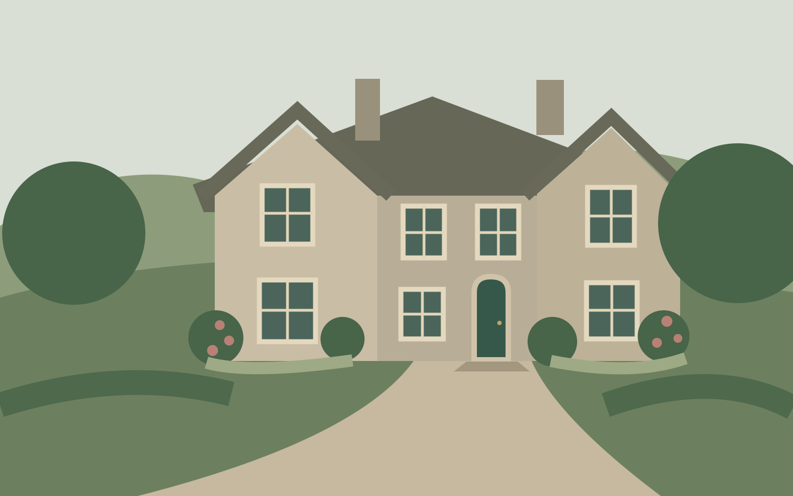

THE SITTING ROOM
The sitting room
Open fire from October, two sofas, a lot of books, and no television. Guests use it more than we expected them to.

Herefordshire · Five rooms · Adults and over-12s
A small bed and breakfast in a seventeenth-century stone house four miles from Hay-on-Wye. Five rooms, a proper sitting room fire, and eggs from the eleven hens at the end of the garden.
No single-night Saturdays. An original illustration of an imagined house.
We bought the house in 2011 with no intention of running a bed and breakfast, and then spent four years restoring it and realised it was far too big for two people. Fourteen years later we still cook every breakfast ourselves.
— Ruth and Alec WarrenderThe rooms
Good linen. Proper beds.
No two quite alike.
An illustrated breakfast, not a menu photograph.
Breakfast
Eggs from our own hens, sausages and bacon from the butcher in Hay, bread baked here the morning you eat it, and tomatoes from the greenhouse between June and September.
There is a cooked breakfast, a smoked haddock, a vegetarian version that is not an afterthought, and porridge with whatever is in the orchard.
Tell us about allergies and preferences when you book rather than at the table and we will genuinely sort it out. We do not do a buffet, because a buffet at five rooms is just food sitting out getting cold.
Make yourself at home
Open fire from October, two sofas, a lot of books, and no television. Guests use it more than we expected them to.
An acre, mostly walled, with the kitchen garden at the back and the hens beyond that. There are chairs out from April.
Local cider, a short wine list, and a decent gin. Write what you take in the book and settle at the end.
Out from the gate
Before you come
Check-in 4pm to 7pm, later by arrangement. Check-out 10:30am. Free parking for six cars.
Dogs in The Linnet only, £15 a stay. Children over 12 welcome.
Two flights of stairs, no lift. Please call so we can talk honestly about access before you book.
Wifi is good in the house and poor in the garden. No smoking anywhere, including the garden.
Rates & minimum stays
All rates include breakfast for two. High season is April to September plus the Hay Festival. We do not take single-night Saturday bookings, which we know is annoying, and which is the only way five rooms works.
The Martin's introductory £135 is descriptive brief copy; this published seasonal table governs the demo estimate.
A few words from guests
“Ruth asked at booking about my wheat thing and then produced, unprompted, four mornings of entirely different breakfasts.”Fiona T. · The Swift
“We took the cheap room with the bathroom across the hall expecting a compromise. It is a better room than most ensuites I have paid double for.”Dan H. · The Martin
“No television in the sitting room is the best decision anyone has made about a guest house. We talked to strangers. It was lovely.”Marek and Ola · The Kestrel
Fictional reviews from the brief.
Come and stay
Booking direct is cheaper than the platforms, because they take between fifteen and eighteen percent and we would rather you had it. Use the form, or ring us — someone answers.
01981 555 0129This concept planner estimates a stay. Availability is not connected and no booking is created.